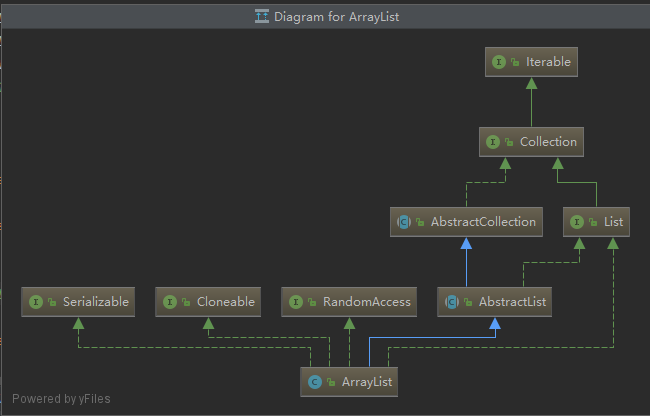
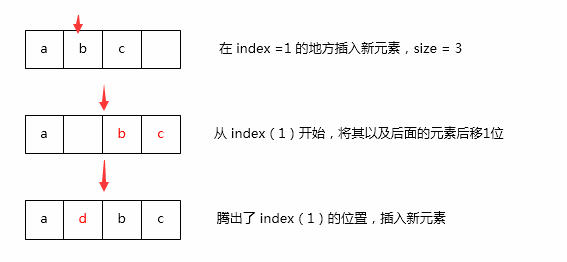
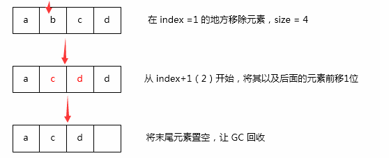

public class ArrayList<E> extends AbstractList<E>
implements List<E>, RandomAccess, Cloneable, java.io.SerializableArrayList 继承于AbstractList，实现了List接口，其实AbstractList 已经实现过List接口，这里重复实现使得接口功能更加清晰，JDK中很多类都是如此。
其中Cloneable接口是克隆标记接口，Serializable序列化标记接口，需要clone和序列化功能必须实现这两个接口，而RandomAccess，单纯是一个标志接口 ，该接口表示该类支持快速随机访问，且在循环遍历时for循环的方式会优于用迭代器。
// 默认初始容量
private static final int DEFAULT_CAPACITY = 10;
// 空数组实例，初始容量为0或者传入集合为空集合（不是null）时使用
private static final Object[] EMPTY_ELEMENTDATA = {};
// 空数组示例，无参构造时使用
private static final Object[] DEFAULTCAPACITY_EMPTY_ELEMENTDATA = {};
// ArrayList内部数据容器
transient Object[] elementData; // non-private to simplify nested class access
// 实际元素数量
private int size;在ArrayList中，主要有五个成员变量。DEFAULT_CAPACITY表示初始容量大小，即在我们初始化ArrayList时不指定容量大小， 默认容量将会是10，Object[] elementData 则是ArrayList内部实际存储对象的容易，也就是我们常说的ArrayList是数组实现的。
在1.8中，空数组分为了两类情况，EMPTY_ELEMENTDATA 与 DEFAULTCAPACITY_EMPTY_ELEMENTDATA，在标记空数组的时候区分了不同的情况。
ArrayList有三个构造方法，指定容量的ArrayList(int initialCapacity) ，无参构造ArrayList() 以及传入集合的ArrayList(Collection<? extends E> c)。
public ArrayList() {
this.elementData = DEFAULTCAPACITY_EMPTY_ELEMENTDATA;
}最简单的莫过于无参构造，直接赋值为空数组DEFAULTCAPACITY_EMPTY_ELEMENTDATA。其实对于常说的默认容量10，是在第一次添加元素调用add()方法时处理的，并不是构造方法中。
public ArrayList(int initialCapacity) {
if (initialCapacity > 0) {
this.elementData = new Object[initialCapacity];
} else if (initialCapacity == 0) {
this.elementData = EMPTY_ELEMENTDATA;
} else {
throw new IllegalArgumentException("Illegal Capacity: "+
initialCapacity);
}
}对于传入容量的构造方法，当传入参数 > 0时，直接初始化对应容量的数组，参数类型为int，也即ArrayList的最大初始容量不能超过Integer.MAX_VALUE，事实上ArrayList的最大容量也只能是Integer.MAX_VALUE。而初始容量传入0，会赋值为空数组EMPTY_ELEMENTDATA。如果 < 0，这个显然的不允许了，直接IllegalArgumentException
public ArrayList(Collection<? extends E> c) {
elementData = c.toArray();
if ((size = elementData.length) != 0) {
// c.toArray might (incorrectly) not return Object[] (see 6260652)
if (elementData.getClass() != Object[].class)
elementData = Arrays.copyOf(elementData, size, Object[].class);
} else {
// replace with empty array.
this.elementData = EMPTY_ELEMENTDATA;
}
}集合构造时，没有进行null校验，也就是说如果传入null，直接就会NPE异常。集合构造的逻辑也很简单，当传入集合不为空时，调用Arrays.copyOf进行复制，并且容量 size为传入大小，而传入集合为空，则赋值为空数组EMPTY_ELEMENTDATA。
ArrayList在添加元素时，都会进行容量确认，可能会涉及到扩容，数组复制，所以效率相对较低。同时在添加元素时，ArrayList并未对元素本身进行校验，所以是允许集合中存在null的情况。
public boolean add(E e) {
// 确定容量
ensureCapacityInternal(size + 1); // Increments modCount!!
// 设值
elementData[size++] = e;
return true;
}在add()方法中，最主要的是确定容量ensureCapacityInternal(int minCapacity)方法。
private void ensureCapacityInternal(int minCapacity) {
ensureExplicitCapacity(calculateCapacity(elementData, minCapacity));
}首先会调用calculateCapacity(Object[] elementData, int minCapacity) 计算容量然后再ensureExplicitCapacity(int minCapacity)
private static int calculateCapacity(Object[] elementData, int minCapacity) {
if (elementData == DEFAULTCAPACITY_EMPTY_ELEMENTDATA) {
return Math.max(DEFAULT_CAPACITY, minCapacity);
}
return minCapacity;
}这里仅仅判断了是否是空数组DEFAULTCAPACITY_EMPTY_ELEMENTDATA（== 地址比较），如果前面还有印象的话，这个只会在无参构造时，才会初始化为DEFAULTCAPACITY_EMPTY_ELEMENTDATA，这时候会取DEFAULT_CAPACITY（10）与传入minCapacity的较大值，常说的默认容量大小10也就是在这里诞生的。
而其他的情况，都直接但会minCapacity，也即 size + 1，如果首次添加，那就是1。
private void ensureExplicitCapacity(int minCapacity) {
modCount++;
// overflow-conscious code
if (minCapacity - elementData.length > 0)
grow(minCapacity);
}modCount是一个操作计数器，add与remove都会 + 1。当我们需要在循环中删除ArrayList元素时，需要使用迭代器Iterator的remove()方法，此时直接使用List的删除有针对modCount的校验，会抛出 ConcurrentModificationException异常。
如果minCapacity大于数组容量，则调用grow(int minCapacity)进行扩容。
private void grow(int minCapacity) {
// overflow-conscious code
int oldCapacity = elementData.length;
// 新容量增长 0.5倍
int newCapacity = oldCapacity + (oldCapacity >> 1);
if (newCapacity - minCapacity < 0)
newCapacity = minCapacity;
if (newCapacity - MAX_ARRAY_SIZE > 0) // MAX_ARRAY_SIZE = Integer.MAX_VALUE - 8
newCapacity = hugeCapacity(minCapacity);
// minCapacity is usually close to size, so this is a win:
elementData = Arrays.copyOf(elementData, newCapacity);
}扩容时，新的容量为原容量 + 原容量的一半，也就是0.5倍增长。如果增长后的新容量比计算出来的容量minCapacity小，则赋值为minCapacity，如果大于MAX_ARRAY_SIZE(Integer.MAX_VALUE - 8)，则进入hugeCapacity(int minCapacity)方法。
private static int hugeCapacity(int minCapacity) {
if (minCapacity < 0) // overflow
throw new OutOfMemoryError();
return (minCapacity > MAX_ARRAY_SIZE) ?
Integer.MAX_VALUE :
MAX_ARRAY_SIZE;
}这里可以看到，当minCapacity < 0 时，会产生OutOfMemoryError，这是一个Error子类，这是需要避免的。什么时候minCapacity会小于0呢，当ArrayList大小为Integer.MAX_VALUE后，还需要扩容，则会发生错误。
这个方法，我们可以看出，当ArrayList需要的容量首次大于MAX_ARRAY_SIZE时，会设置为MAX_ARRAY_SIZE，然后再次扩容时会变成Integer.MAX_VALUE，如果还不够，那就会发生错误。
扩容的最后一步是调用Arrays.copyOf进行元素的复制，这个最终也是调用System.arraycopy进行操作的。同时size++，实际元素的数量也增加 1。
public void add(int index, E element) {
rangeCheckForAdd(index);
// 确认容量大小
ensureCapacityInternal(size + 1); // Increments modCount!!
System.arraycopy(elementData, index, elementData, index + 1, size - index);
elementData[index] = element;
size++;
}在中间添加元素的逻辑和尾部添加元素基本一样。
private void rangeCheckForAdd(int index) {
if (index > size || index < 0)
throw new IndexOutOfBoundsException(outOfBoundsMsg(index));
}添加元素前，首先要进行范围检查，添加的范围只能在[0，size]之间，index == size时，其实就是尾部插入。然后确认容量新的容量，这个方法尾部添加时已经讲过，接着数组复制，这步复制会跳过index位置的处理，最后再对index位置赋值，即完成了index位置的添加。
可以看到最后调用了size++，add(int index, E element)方法总是会添加元素，即使该index位置存在数据，只是会将原来的index位置数据往后挤动一位，并不会进行覆盖。

ArrayList除了add()与add(int index, E element)，还有两个批量添加的方法。
public boolean addAll(Collection<? extends E> c) {
Object[] a = c.toArray();
int numNew = a.length;
// 确认容量
ensureCapacityInternal(size + numNew); // Increments modCount
System.arraycopy(a, 0, elementData, size, numNew);
size += numNew;
return numNew != 0;
}
public boolean addAll(int index, Collection<? extends E> c) {
// 范围检查
rangeCheckForAdd(index);
Object[] a = c.toArray();
int numNew = a.length;
// 确认容量
ensureCapacityInternal(size + numNew); // Increments modCount
int numMoved = size - index;
if (numMoved > 0)
System.arraycopy(elementData, index, elementData, index + numNew, numMoved);
System.arraycopy(a, 0, elementData, index, numNew);
size += numNew;
return numNew != 0;
}有了前面单个元素的添加基础，批量添加就很好懂了，唯一的区别就是在数组复制时，是复制整个待添加的集合。对于index位置的批量添加，中间插入的话（numMoved > 0），第一次复制会腾出中间要添加集合长度的位置，第二次将添加的集合复制到index位置。
对于ArrayList中元素的修改，如果是对象属性的修改，可以直接修改引用对象，但对于基本类型包装类或者String呢，并没有办法通过引用修改，亦或者我们要更换对象引用，这时候就需要调用set(int index, E element)。
public E set(int index, E element) {
// 范围检查
rangeCheck(index);
E oldValue = elementData(index);
elementData[index] = element;
return oldValue;
}这个方法实现很容易，ArrayList的修改本质就是对数组的值进行更改。首先进行范围检查，防止数组越界，这个很好理解，ArrayList内部就是数组，然后对index位置的值进行替换即可。
private void rangeCheck(int index) {
if (index >= size)
throw new IndexOutOfBoundsException(outOfBoundsMsg(index));
}elementData(int index)获取了原来的值，用于set返回值，elementData实现更加简单，就是数组取值。
ArrayList中移除元素的方法有三个，按索引删除remove(int index)、按元素删除remove(Object o)以及批量删除removeAll(Collection<?> c)等。
public E remove(int index) {
// 范围检查
rangeCheck(index);
modCount++;
E oldValue = elementData(index);
int numMoved = size - index - 1;
// 是否删除的最尾部
if (numMoved > 0)
System.arraycopy(elementData, index+1, elementData, index, numMoved);
elementData[--size] = null; // clear to let GC do its work
return oldValue;
}由于移除元素，并不涉及内部数组大小变化，所以实现相对较简单。必须要的范围检查，这个已经丝毫不陌生了，然后判断是否是尾部删除，如果不是尾部删除，则进行System.arraycopy复制，复制的目的是将index后的元素向前挪动 1 位元素以覆盖要删除的index位置，然后size减 1。
在移除方法中，可以看到modCount进行增加。同时对移除后尾部的元素赋值为null了，让GC生效。

public boolean remove(Object o) {
if (o == null) {
for (int index = 0; index < size; index++)
if (elementData[index] == null) {
fastRemove(index);
return true;
}
} else {
for (int index = 0; index < size; index++)
if (o.equals(elementData[index])) {
fastRemove(index);
return true;
}
}
return false;
}按元素删除的时候，首先判断了元素是否为null，因为ArrayList中是可以添加null的，这里不同分支的逻辑是一样的，都是遍历集合比较是否和传入元素相同，只是比较一个是 == null 一个是 equals。如果相同则删除，然后return了，所以remove(Object o)方法只会删除集合第一个与传入对象相同的元素。
重点就是这个fastRemove了。
private void fastRemove(int index) {
modCount++;
int numMoved = size - index - 1;
if (numMoved > 0)
System.arraycopy(elementData, index+1, elementData, index, numMoved);
elementData[--size] = null; // clear to let GC do its work
}看到这个方法第一感觉是什么？是不是似曾相识，没错，fastRemove和按指针删除基本上市一样的，只是少了范围校验和获取删除前的元素这两步。
public boolean removeAll(Collection<?> c) {
Objects.requireNonNull(c);
return batchRemove(c, false);
}对于removeAll(Collection< ? > c)，校验非空后调用了batchRemove(Collection< ? > c, boolean complement)。
private boolean batchRemove(Collection<?> c, boolean complement) {
final Object[] elementData = this.elementData;
int r = 0, w = 0;
boolean modified = false;
try {
for (; r < size; r++)
// 找出不需要移除的元素，放在数组的前面
if (c.contains(elementData[r]) == complement)
elementData[w++] = elementData[r];
} finally {
// Preserve behavioral compatibility with AbstractCollection,
// even if c.contains() throws.
if (r != size) {
System.arraycopy(elementData, r, elementData, w, size - r);
w += size - r;
}
if (w != size) {
// clear to let GC do its work
for (int i = w; i < size; i++)
elementData[i] = null;
modCount += size - w;
size = w;
modified = true;
}
}
return modified;
}这个方法看着可能有一点点绕，但明白其原理后就很清晰了，首先遍历数组，找出在要移除数组中不包含的元素，从原数组头部开始放，这样的数有w个，即最终数组前w个元素都是在集合c中包含的，而剩下的位置的元素则不关心，最后就是讲w到size的元素赋值为null，以便GC工作。
前面也提到了，ArrayList在循环删除时会报错，这个究竟是怎么回事呢？
如果我们想删除一个集合中全部的某一个元素，例如下面集合ss中的a元素。
List<String> ss = new ArrayList<>();
ss.add("a");
ss.add("b");
ss.add("a");
ss.add("b");
ss.add("c");当我们需要删除一个时，我们可以调用remove方法删除，根据索引或者根据元素都用，但是多个时，我们不知道每一个元素的索引，而根据值也不知道有多少个a存在，所以我们需要遍历集合。
这时候就可能存在问题了。
for (String s : ss) {
if("a".equals(s)){
ss.remove(s);
}
}无论是fori的还是foreach的删除，都会抛出java.util.ConcurrentModificationException，这是因为Arraylist循环时每一次取值都会调用其内部类Itr.next()方法。
public E next() {
// 校验modCount
checkForComodification();
int i = cursor;
if (i >= size)
throw new NoSuchElementException();
Object[] elementData = ArrayList.this.elementData;
if (i >= elementData.length)
throw new ConcurrentModificationException();
cursor = i + 1;
return (E) elementData[lastRet = i];
}在该方法最开始的地方，有校验modCount的checkForComodification()方法，这个方法中比较了modCount和expectedModCount，不相等就会抛出ConcurrentModificationException异常。
final void checkForComodification() {
if (modCount != expectedModCount)
throw new ConcurrentModificationException();
}那expectedModCount到底是什么，为什么和modCount不相等呢。
private class Itr implements Iterator<E> {
int cursor; // index of next element to return
int lastRet = -1; // index of last element returned; -1 if no such
int expectedModCount = modCount;expectedModCount是Itr的成员变量，这个在进行循环时会初始化赋值为modCount，最开始的时候他们是相等的，经过前面的探究，我们已经知道在remove调用时modCount会自增，所以checkForComodification就会抛出异常。
而我们常使用的这个做法就是使用 Itr 的remove。
Iterator<String> it = ss.iterator();
while (it.hasNext()){
if("a".equals(it.next())){
it.remove();
}
}这样删除时就没有任何问题了，这是因为 Itr 的remove中，对expectedModCount进行了重新赋值，使得每一次调用后值都相等。
public void remove() {
if (lastRet < 0)
throw new IllegalStateException();
checkForComodification();
try {
// 调用ArrayList的删除
ArrayList.this.remove(lastRet);
cursor = lastRet;
lastRet = -1;
// expectedModCount重新赋值
expectedModCount = modCount;
} catch (IndexOutOfBoundsException ex) {
throw new ConcurrentModificationException();
}
}ArrayList中主要的就是构造方法、add和remove了，这几个方法看懂后，其他方法实现就比较清晰了。
比如get方法，其实就是根据索引获取了数组的元素。
public E get(int index) {
// 范围检查
rangeCheck(index);
// 从数组获取值，即 elementData[index]
return elementData(index);
}例如size方法， 就是返回了size属性的值。
public int size() {
return size;
}而isEmpty方法，就是判断size是否为0.
public boolean isEmpty() {
return size == 0;
}在ArrayList中，有一个获取子集合的subList方法，这个方法返回的是一个内部类SubList，该类并没重新创建新的数组，依旧持有了ArrayList数组的元素的引用，所以当修改ArrayList元素的时候，SubList的元素也会跟着修改，这个在实际开发中一定要注意。
public List<E> subList(int fromIndex, int toIndex) {
subListRangeCheck(fromIndex, toIndex, size);
return new SubList(this, 0, fromIndex, toIndex);
}